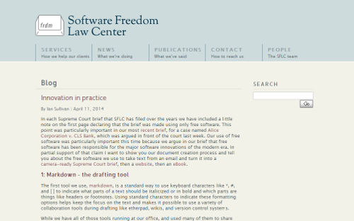

也紀念我們永遠的朋友 李士傑先生（Shih-Chieh Ilya Li）。
完全用自由開源軟體授權方案來寫訴狀 - SFLC 的現身說法！
自由開源軟體經過 30 幾年的深根發展，已扛起了當代軟體創新模式最重要的推動角色。位於美國紐約，就自由開源軟體法律訴訟具有深度專業性的軟體自由法律中心 (Software Freedom Law Center, SFLC)，更以其編寫最高法院意見書的過程，來現身說法式地在其網站撰文示範！SFLC 強調其用以製作最高法院意見書的諸般工具，全然皆是自由開源授權的軟體專案，以下便在其披露文章的基礎下，為各位介紹這幾種好用的文書編輯與排版工具，以讓有興趣的讀者可以在之後自行安裝、按圖索驥的充份應用相關軟體：

▲ 圖1："Innovation in Practice" By Ian Sullivan, April 11, 2014.
1、Markdown
Markdown 是一種標記語言，它的架構輕簡且易學易用，舉例來說，只要鍵入 *, #, 或 [ ] 等符號，就代表標示相關文字要變成粗體、斜線或是增加連結 (hyperlink) 的功能，而雖然在編寫過程中多以純文字加標記符號的方式來表達，當多人共工，兩個文件編撰的參與者皆學過 Markdown 語法時，便能一眼辨識出共工文件中被使用的 Markdown 語法，而了解對方所想要表達文句的呈現層級與架構。除此之外，共工編寫者更可以在 Markdown 語法的基礎上，進一步利用像 etherpad、hackpad、wiki 或版本控制系統 (version control systems) 等等合作平台與工具，來順暢文件的共同編寫流程。再者，Markdown 語法的另一個優異之處，在於透過相應的轉檔軟體，編寫完成的文件更可直接存放為其他的文件格式，例如 XHTML、HTML、PDF，以及 OpenOffice 與 LibreOffice 所使用的 ODT 格式！
SFLC 的合作律師們，彼此之間更直接在往返郵件中使用 Markdown 語法來傳遞資訊，如此一來，信件在多人之間傳遞，其後續協力者，便可在前人以 Markdown 語法標示的文句裡，直接插入結構性的補充資訊，來讓前者與其他協力者，更了解後續立論與補充資訊的邏輯性與合理性，並且，在電子郵件傳遞過程裡，直接將以 Markdown 語法編輯過的文件資料貼在郵件內文，也有另一個實際的好處，那就是可以直接透過電子郵件內容關鍵字搜尋的功能，來查找到日後想要重覆利用的資料，畢竟，將文件以附加檔 (attachment) 的方式隨同電子郵件交流雖然方便，但這些附加的文件，都必須先經閱讀者額外下載，另行分類或以紙本列印出，才能就內容方面受到查找，但 SFLC 透過前述的作法，某種程度大量的提升了原生資料與討論資料日後被協力者直接數位查尋的方便性與準確性，非常值得相類的合作團體來效法。
使用者如果對 Markdown 語法的實際運用感到興趣，推薦可以善用一套跨平台的 Markdown-based 編輯程式 Retext 來學習與使用，此一 Markdown 語法的編輯程式，可以被使用在 Windows 系統、被使用在 Mac OS X 系統，以及各種版本的 Linux 作業系統，在 Debian / Ubuntu Linux 下，更可直接開啟終端機輸入 "sudo apt-get install retext“ 即可完成自動下載與安裝，更重要的是，其為一「所見即所得」形態的 Markdown 語法編輯器，當使用者開啟同步預覽功能，更可即時看到語法變更之後對文件排版造成的效果，亦可直接利用此一程式，將文件改以 HTML、ODT，以及 PDF 等格式進行匯出。
2、Pandoc
第二個在 SFLC 撰寫專業法律意見書流程中，使用到的編輯利器是 pandoc，這是一個格式轉譯與轉換的工具程式，基本上它是透過命令列、指令列的模式來操作，所以極為輕巧，SFLC 撰文的作者 Ian Sullivan 更因此戲稱其為瑞士萬用刀 (Swiss Army knife)，意指 Pandoc 雖在運作時耗費極少資源，也沒有 GUI (Graphical User Interface) 圖形化的操作介面，但在下達適當的指令之後，卻能夠迅速的幫助使用者將 Markdown 語法文件，直接轉換為網頁、word 文件、Wiki 語法文章，甚至 eBook 等等各個領域的通用格式，可說是量小質精，一用百搭的文件格式轉檔利器。在 SFLC 撰寫意見書的流程裡，通常是利用 Pandoc 將相關文件先轉為 LaTeX 格式，而要完成這項工作，操作者僅須透過指令列下達 "pandoc draft.mkdn -o draft.tex"，就可輕易將範例中使用的 Markdown 格式文件 draft.mkdn，直接轉為 LaTeX 格式，來進行後續利用。雖然指令列的操作方式，可能會讓不少人因之卻步，但不要害怕，Pandoc 相關的操作指令已優化到非常直覺且易於操作，例如上述 "pandoc draft.mkdn -o draft.tex" 這個指令，由於 .tex 檔就是 LaTex 格式的儲存檔，所以下達此一指令之後，Pandoc 程式便已知悉是要將 draft.mkdn 文件，由 Markdown 語法轉換為 LaTex 格式，除了此一指令之外，完全不須其他的額外指示，即可完美達到轉檔的目標，使用者只要試著操作幾次，相信後續對於相關指令，都能夠很快便駕輕就熟。
3、LaTeX
第三個被利用到的文書編撰工具是 LaTex，這是一個極具專業性的輸出工具，能夠將需要精確格式的複雜文件，進行妥適編排，並可將文件縮成最小檔案，所以普遍被用於書本、履歷、新聞稿、論文或法律書狀等專業性文件上，事實上國內外著名大學的碩博士論文的數位格式繳交，多容許直接以 LaTex 格式來進行，尤其是資訊工程與理工背景的學院更是如此。LaTeX 與一般 Word 類型的文書處理器，最大的不同點在於其具有優異的專業排字引擎 (professional quality typesetting engine)，透過這個內設機制，程式將會計算文件最佳行距與間距，而讓使用者得到最完美的輸出成果，此外，LaTeX 的編排格式是與文件內容分開來儲放和處理的，所以同樣的編排格式，將可以被用於不同的文件內容，例如 SFLC 便於其專文提供了其傳遞予最高法院的標準書狀格式供大家參考，而若此格式符合使用，後續文件的製作者便可以直接襲用，來節省自己的時間與精力。此外，當文件編排完成後，LaTeX 更可將文件轉為 PDF 檔，如此一來該份文件不管被哪一台印表機列印，都不會有格式轉換導致格式紊亂等 Word 類別文書處理器，經常會出現的這些問題。
4、Tex4ht
第四個上場的編輯、轉檔文件為 tex4ht，這是一個為 LaTeX 打造的網頁編排增效引擎 (webpage layout engine)，簡單來說，此一編排引擎，可以進一步將 LaTeX 檔案，轉為網頁適用的 HTML 格式。舉例來說，SFLC 可以直接安裝 Tex Live 來營建 LaTex 編輯格式的基本架構，並再加載 Texmaker 這樣跨平台的編輯器，來修改之前使用 Pandoc 所轉換過來的 .tex 檔案。此後，再直接利用 tex4ht 這個增效模組（已內設於 Texmaker 專案裡），來將 LaTex 格式文件一併轉一份 HTML 格式的版本出來，其後便可直接以此網頁格式的檔案，來進行網站上稿與發布！
5、Calibre
最後，如果要將相關文件轉換為通用的電子書格式，可以回過來來使用 Pandoc 來完成。將第三步驟確定內容的 LaTex 格式檔案，執行 "pandoc alice-cls-amicus.tex -o Initial-eBook.epub" 此行指令，便可以利用 Pandoc 再將 LaTex 格式的文件，轉換為電子書領域通用性極高的 epub 格式，此時，該文件已經完成了電子書的基本排版。而為了讓該份 eBook 文件，在瀏覽上更加美侖美奐，還可以利用 Calibre 這個 eBook 圖書管理與編輯程式，來美化該檔案！也就是說，經由 Pandoc 與 Calibre 的互相搭配，使用者可以很輕易地在短時間之內，就完成電子書格式文件的編輯與製作。
前述這些文件編輯工具，對於習慣用傳統商業授權文書工具的使用者而言，或許顯得陌生，但其實這些工具都已經被自由開放源碼領域裡的軟體愛用者使用多時，享有口碑並經得起考驗，其相關的使用說明文件亦非常豐富，只要願意稍做嘗試，相信很快您就可以成為下一個愛用者，更可讓荷包不再因必須多方購入傳統商業授權軟體而失血。
參考網址：
- 實用的創新工具
- Pandoc 用命令行轉換標記語言！
- 多功能的標記語言及排版系統 - LaTeX
- Calibre－萬用的電子書管理軟體
- markdown
- pandoc
- latex
- tex4ht
- calibre
Special


Address：No.128, Sec.2, Academia Rd., Institute of Information Science, Academia Sinica, Nangang District, Taipei City 11529, Taiwan (R.O.C).
Privacy Policy. Terms-of-use